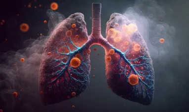
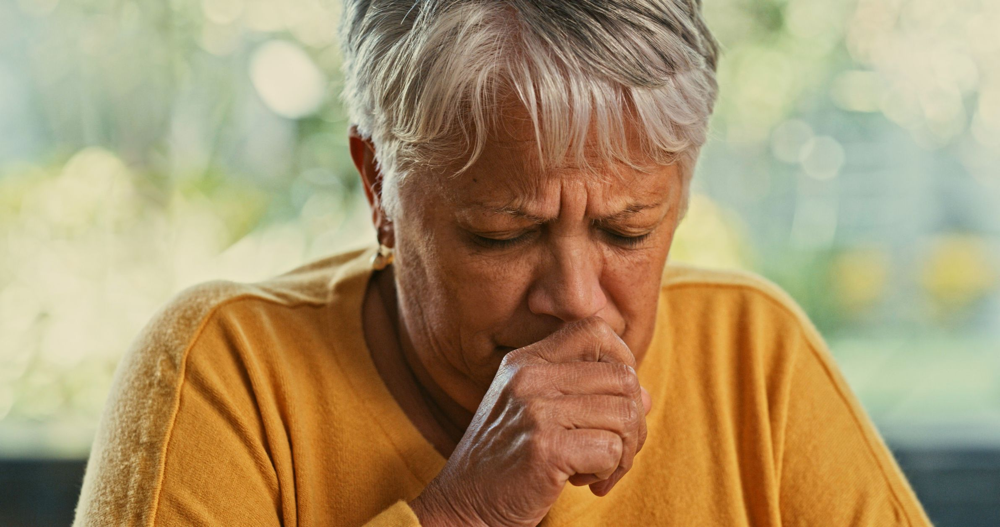

Maneiras De Fortalecer a Implementação Da Convenção-Quadro Para o Controle do Tabaco em Todo o Mundo
O Tabaco Pode Causar Vários Problemas Para o Ser Humano
O tabagismo é uma das principais causas de doenças graves e mortes evitáveis em todo o mundo. Conheça os impactos negativos do tabaco na saúde e como podemos combater esse problema.
Riscos à Saúde
Doenças Cardiovasculares
Fumar aumenta o risco de ataque cardíaco, AVC e problemas circulatórios.
Câncer
O tabaco é a principal causa de vários tipos de câncer, incluindo pulmão, boca e esôfago.
Doenças Respiratórias
Fumar causa DPOC, asma e aumenta o risco de infecções pulmonares.
Sistema Imunológico
Fumar enfraquece o sistema imunológico, tornando o corpo mais suscetível a infecções.
Envelhecimento Precoce da Pele
Fumar acelera o envelhecimento da pele, causando rugas e perda de elasticidade.
Sistema Digestivo
O tabaco aumenta o risco de úlceras, refluxo ácido e outros problemas digestivos.

Fortalecer a Implementação da Convenção-Quadro para o Controle do Tabaco (CQCT)
O fortalecimento da implementação da CQCT é crucial para reduzir os danos causados pelo tabagismo à saúde pública mundial. Aqui estão algumas estratégias-chave para fortalecer essa implementação:
1. Fortalecer o Compromisso Político
É necessário um engajamento contínuo de líderes políticos para garantir que o controle do tabaco seja uma prioridade nas agendas políticas e de saúde pública.
2. Melhorar a Legislação Nacional
Criação de políticas robustas, regulamentando o tabaco e aumentando impostos. A fiscalização rigorosa é fundamental para o sucesso dessas leis.
3. Educação e Conscientização
A realização de campanhas educativas sobre os riscos do tabagismo pode reduzir significativamente o número de fumantes, especialmente entre os jovens.
Sintomas do Tabagismo
O tabagismo não apenas causa doenças a longo prazo, mas também apresenta sintomas visíveis e problemas de saúde imediatos. Conheça os sinais mais comuns:
- Tosse persistente ou crônica
- Falta de ar, mesmo em atividades leves
- Mau hálito constante
- Dor ou desconforto no peito
- Fadiga e cansaço excessivo
- Infecções respiratórias frequentes
- Unhas e dentes amarelados
